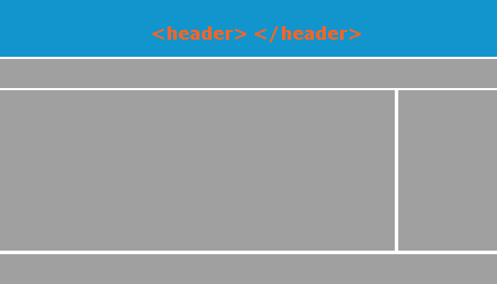
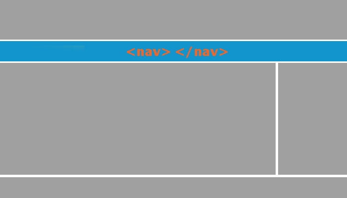
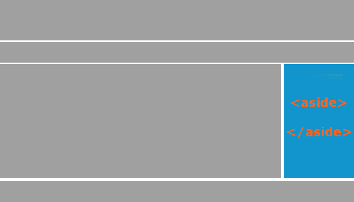
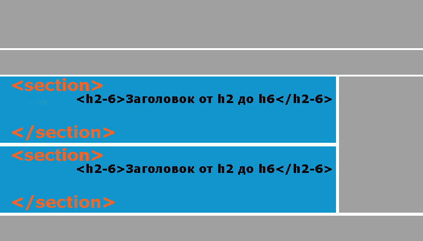
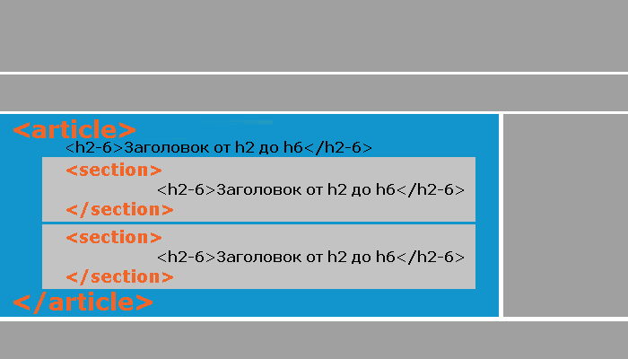
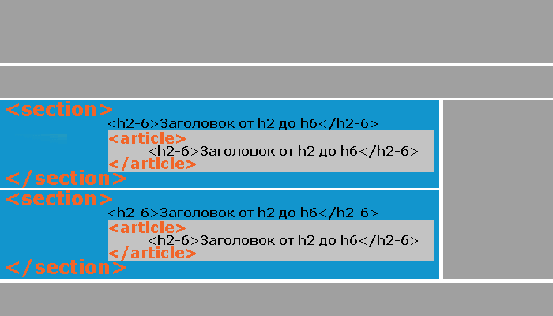
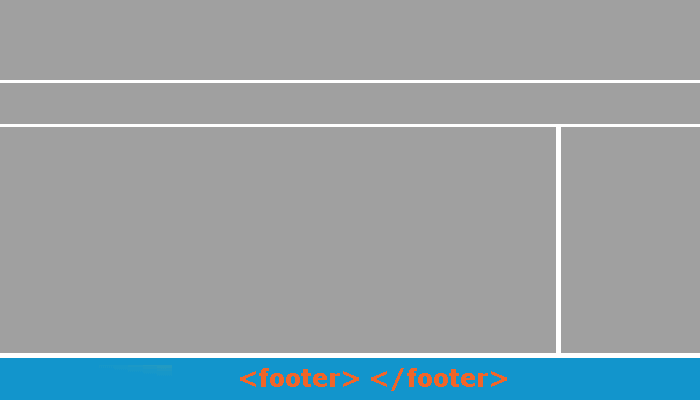
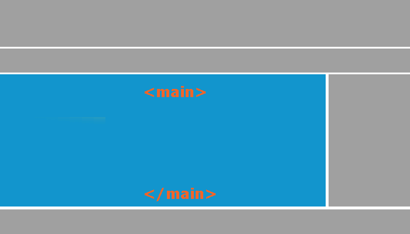

Теги <div> и <span> представляют из себя универсальные пустые контейнеры, которые необходимо заполнить каким-либо содержанием, либо сгруппировать вложенные элементы для их дальнейшей стилизации средствами CSS, и при необходимости динамически манипулировать ими с использованием скриптов, например, на таком языке программирования, как Javascript.
Тег <div> определяет любой отдельный блок содержимого и предназначен для деления веб-страницы на фрагменты.
Этот элемент является блочным — означает, что его содержимое всегда будет начинаться с новой строки, при этом элемент занимает всю доступную ширину.
В отличии от блочного элемента <div> тег <span> является строчным и применяется к внутренним (inline) элементам страницы, то есть к словам, фразам, которые находятся в пределах абзаца или небольшого фрагмента текста, оглавления и т.п..
<!DOCTYPE html> <html> <head> <title>Теги <div> и <span></title> </head> <body> <div style = "color:green"> <p>Абзацы мы объединили тегом <div>, а это <span style = "color:red">слово</span> мы заключили тегом <span>.</p> <p>С помощью встроенной таблицы стилей мы выделили это слово красным цветом, а блок текста получил зеленый цвет.</p> </div> <div style = "background-color:khaki"> <p>Обратите внимание, что тег <div> является блочным и это означает, что его содержимое всегда будет начинаться с новой строки, при этом элемент занимает всю доступную ширину.</p> <p>Этот блок тоже содержит два абзаца. С помощью встроенной таблицы стилей мы указали для всего блока цвет заднего фона - khaki, а для этога <span style = "background-color:orangered">слова</span> orangeRed (мы заключили его в тег <span>).</p> </div> </body> </html>

Тег <header>(верхний колонтитул) является признаком верзнего колонтитула или баннера верхней части страницы, которая обчно содержит логотип (иконка), навигацию и т.д.. Допускается размещать несколько элементов <header> в одном документе.
<header> <img src = "logo.png" alt = "logo"> <!-- изображение с логотипом --> <h1>Заголовок первого уровня</h1> <!-- заголовок первого уровня --> </header>
Запрещается помещать элемент <header> внутрь таких элементов, как <footer> (нижний колонтитул), <adress> (определяет контактную информацию) или внутрь другого элемента <header>.
Тег <nav>(навигация) для обозначения содержимого в виде основных навигационных ссылок. Документ может иметь несколько элементов <nav>, например, один для навигации по сайту, а второй для навигации по странице.
<nav> <!-- начало навигации --> <ul> <!-- маркированный список --> <li><a href = "#">Домой</a></li> <!-- ссылка в элементе списка --> <li><a href = "#">HTML</a></li> <!-- ссылка в элементе списка --> <li><a href = "#">CSS</a></li> <!-- ссылка в элементе списка --> </ul> <!--конец списка--> </nav> <!-- конец навигации -->
Не использовать элемент <nav> внутри тега <footer> (нижний колонтитул).
Тег <aside> (отступление) предназначен для обозначения содержимого, относящегося к окружающему этот тег содержимому. Элемент <aside> представляет собой раздел страницы с контентом, который может рассматриваться отдельно от основного содержания. В этих разделаъх часто размещаются бовковые колонки, рекламный контент, биографические данные и т.д..
<article> <!-- начало статьи --> <p>Сегодня мы с семьей пересматривали фильм "Один дома 2"...</p> <aside> <!-- отступление (выносим информацию, например, на поля) --> <p>В одной из сцен фильма снялся будущий президент <abbr title = "Соединенные штаты Америки">США</abbr> - <i>Дональд Трамп</i></p> </aside> </article> <!-- конец статьи -->
Тег <article> (статья) применяется для обозначения раздела страницы, содержащего завершенную, независимую композицию. Данный элемент может содержать в себе такую инфу как запись блога, товар в интернет-магазине, основной текст страницы и т.д..
Элемент должен иметь в качестве дочернего (вложеннного) элемента заголовок от <h2> до <h6> (если до этого не использовался <h1>, то допускается его разовое размещение). Внутри тега <article> могут содержаться другие одноименные элементы с близким по смыслу содержимым.
<article> <!-- начало основной статьи --> <h1>Статьи о птицах</h1><!-- заголовок первого уровня (если был использован в документе, то h2, а во вложенных h3) --> <p>Вводная информация о птицах...</p> <article> <!-- начало первой вложенной статьи --> <h2>Статья о воробье</h2> <p>Информация про воробьев...</p> </article> <!-- конец первой вложенной статьи --> <article> <!-- начало второй вложенной статьи --> <h2>Статья о синице</h2> <p>Информация про синиц...</p> </article><!-- конец второй вложенной статьи --> </article> <!-- конец основной статьи -->
Тег <section> (раздел) служит для группировки взаимосвязанного содержимого.
Раздел должен логически отображать структуру документа , например, вы можетет разбить содержимое главной страницы на три раздела: вводную информацию о сайте, контактную информацию и самые последние новости.
Данный тег часто используется при верстке целевых страниц ( англ. landing page, "посадочная страница") для логического разделения страницы на разделы.
Элемент должен иметь в качестве дочернего (вложенного) элемента заголовок от <h2> до <h6> (если до этого не использовался <h1>, то допускается его разовое размещение).
<section> <!-- начало первой вложенной статьи --> <h2>Первый раздел</h2> <p>Информация внутри раздела</p> </section> <!-- конец первой вложенной статьи --> <section> <!-- начало второй вложенной статьи --> <h2>Второй раздел</h2> <p>Информация внутри раздела</p> </section><!-- конец второй вложенной статьи -->
Обратите внимание, что допускается в качестве дочернего (вложенного) элемента тега <article> использовать тег <stction> (раздел), как бы разбивая по смыслу содержимое. (от <h2> до <h6>)
Можно и наоборот.
Допускается помещать элементы <section> (раздел) в другие элементы <section>, но при этом рекомендуется учитывать следующую структуру документа:
<body> <h1>Заголовок первого уровня</h1> <section> <h2>Заголовок второго уровня</h2> <section> <h3>Заголовок третьего уровня</h3> </section> </section>
Тег <footer> (нижний колонтитул) содержит информацию, которая обычно помещается в нижнем колонтитуле страницы, например свведения об авторских правах, другую информацию, некоторые ссылки для навигации по сайту и тому подобное.
На кол-во тегов <footer> на одной странице ограничений не накладывается. Можно, например, поместить нижний колонтитул внутри тега <article>, чтобы хранить в нем информацию, относящуюся к статье, например сноски, ссылеи или выписки.
<body> <h1>Важный заголовок</h1> <article> <!-- начало первой статьи --> <h2>Статья о бытие</h2> <p>Информация про бытие...</p> <footer>Сноски, ссылки и тому подобное <!-- "подвал" статьи --> <address>Информация об авторе статьи</address> </footer> </article><!-- конец первой статьи --> <article> <!-- начало второй статьи --> <h2>Статья о бытие 2</h2> <p>Информация про бытие 2...</p> <footer>Сноски, ссылки и тому подобное <!-- "подвал" статьи --> <address>Информация об авторе статьи</address> </footer> </article> <!-- конец второй статьи --> <footer>сведения об авторских правах, навигация по сайту, счетчики... <!-- "подвал" сайта --> <address>Контактные данные автора сайта</address> </footer> </body>
Тег <main> предназначен для основного содержимого документа (основной контент). Контент внутри элемента должен быть уникальным для всего документа и не дожен содержать элементы, которые повторяются в различных документах . Допускается использовать элемента только один раз в одном документе.
Обращаю ваше внимание, что тег <main> не должен быть потомком таких блоков, как (не должен быть вложен в них):
Простая разметка для сайта по современным стандартам гипертекстовой разметки HTML 5.
<!DOCTYPE html> <html> <head> <title>Разметка страницы</title> </head> <body> <header style = "background-color:khaki; height:100px"> <p>Верхний колонтитул (тег <header>)</p> </header> <nav style = "background-color:coral; height:75px"> <a href = "#">Ссылка 1</a> | <a href = "#">Ссылка 2</a> | <a href = "#">Ссылка 3</a> | <p>Панель навигации (тег <nav>)</p> </nav> <aside style = "float:right; width:200px; height:250px; background-color:tan"> <p>Справа мы разместили тег <aside></p> </aside> <main style = "height:250px"> <h1>Главный заголовок сайта</h1> <p>Основное содержимое (тег <main>)</p> <section style = "background-color:grey; height:75px"> <h2>Заголовок второго уровня</h2> <p>Раздел 1 (тег <section>)</p> </section> <section style = "background-color:grey; height:75px"> <h2>Заголовок второго уровня</h2> <p>Раздел 2 (тег <section>)</p> </section> </main> <footer style = "background-color:khaki; height:80px"> <p>Нижний колонтитул (подвал) тег <footer></p> <address>Пример с сайта basicweb.ru</address> </footer> </body> </html>
Тег <figure> применяется для обозначения контента, иллюстрирующего или поддерживающего определённую идею текста.
Благодаря тегу <figcaption> вы можете вывести пояснение к содержимому, которое находится внутри тега <figure>. Тег <figcaption> должен размещаться как первый, или последний элемент внутри тега <figure>.
<!DOCTYPE html> <html> <head> <title>Пример использования тега <figure></title> </head> <body> <main> <figure> <img src = "10.jpg" alt = "ничоси" width = "80" height = "80"> <figcaption>Ничоси 1</figcaption> </figure> <figure> <img src = "10.jpg" alt = "ничоси" width = "80" height = "80"> <figcaption>Ничоси 2</figcaption> </figure> </main> </body> </html>
!Если вы разместите элемент <figcaption> первым вложенным элементом тега <figure>, то пояснение будет отображаться сверху изображения:
Тег <details> определяет дополнительные детали, которые пользователь может отобразить или скрыть . Содержание тега отображается для пользователя тольвко если логический атрибут open установлен.
Тег <summary> определяет видимый заголовок для тега <details>. Если элемент не используется, то устанавливается значение браузера по умолчанию (как правило, заголовок "Подробнее").
<!DOCTYPE html> <html> <head> <title>Пример использования тега <details> и <summary></title> </head> <body> <details> <summary>Показать ? </summary> Пожалуйста <img src = "10.jpg" alt = "ничоси" width = "80" height = "80"> <details> <summary>Ещё? </summary> <img src = "10.jpg" alt = "ничоси" width = "80" height = "80"> </details> </details> </body> </html>